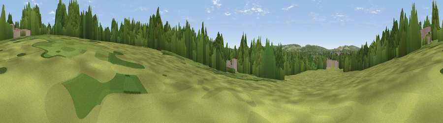

Viewpoint near Oxford
#42984 in England · top 88% of its area beats it · near OxfordThe view, rendered

A 360° render of this exact spot computed from the terrain model, tree cover and land cover — summer colours, afternoon light, calibrated against photographs of famous viewpoints. Real trees, hedges and buildings will differ in detail.
The panorama
Grey silhouette: terrain skyline in each direction (720 bearings, Earth curvature and refraction included). Dashed green: skyline with trees (+15 m) and buildings (+8 m) as obstacles. Blue strip: how far the ground is visible on each bearing.
Where the view opens
Wedge length = distance to the farthest visible ground on that bearing (vegetation-aware). Rings at 10, 25 and 50 km.
What fills the view
39% woodland · 31% grassland · 27% built-up · 3% cropland
Angular shares of the visible panorama (visual magnitude), not map area. Landscape diversity 0.52 (0–1 Shannon).
Key numbers
More beautiful places nearby
The staircase of upgrades: each row has a higher view potential than everything closer. Driving times are estimates from straight-line distance, calibrated against real road routing — check an actual route before setting out.
| Place | Direction | Drive | Score |
|---|---|---|---|
| Viewpoint near Horspath | E · 3 km | ~7 min | 61.6 |
| Viewpoint near Swinford | WNW · 9 km | ~17 min | 64.5 |
| Round Hill | SSE · 14 km | ~25 min | 70.1 |
| Viewpoint near Lewknor | ESE · 21 km | ~35 min | 70.8 |
| Viewpoint near Lewknor | ESE · 21 km | ~36 min | 74.4 |
| Viewpoint near Woolstone | SW · 31 km | ~48 min | 76.7 |
| Broadway Hill | NW · 51 km | ~73 min | 77.7 |
| Viewpoint near Cleeve Hill | WNW · 58 km | ~80 min | 79.6 |
51.75106, -1.22959 · source: osm viewpoint · position refined by local search. Computed location — check access rights before visiting.